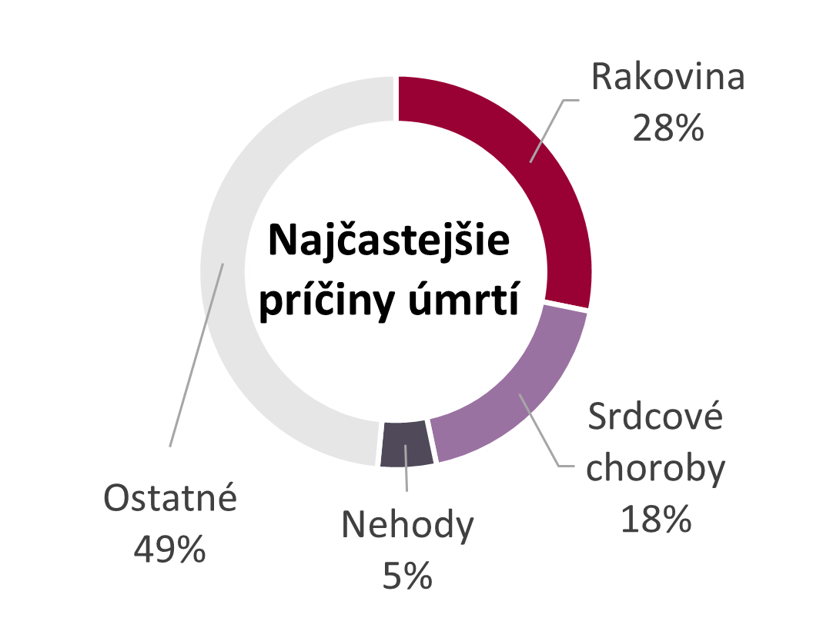
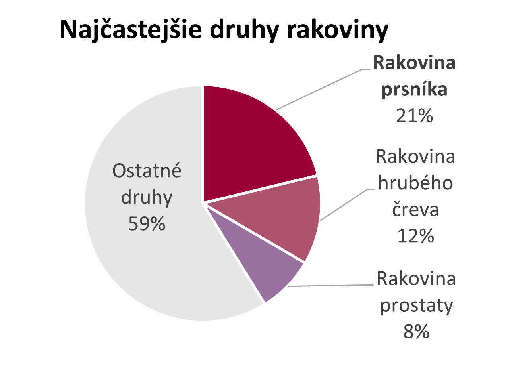
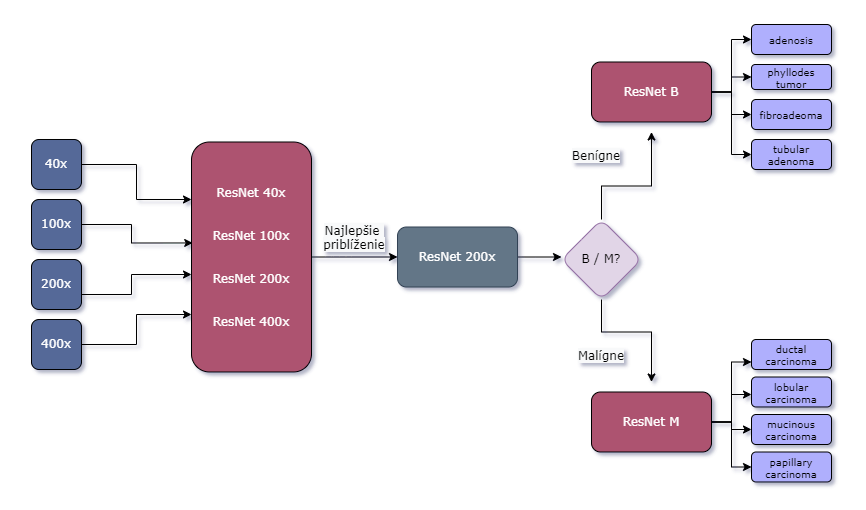
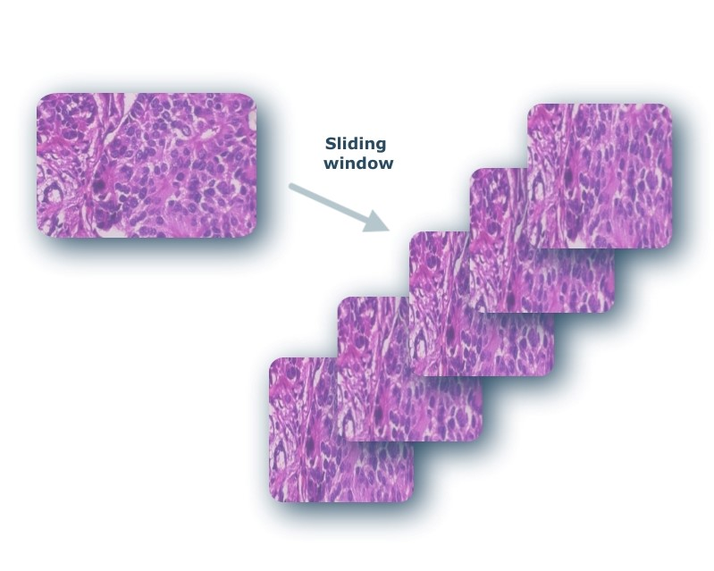
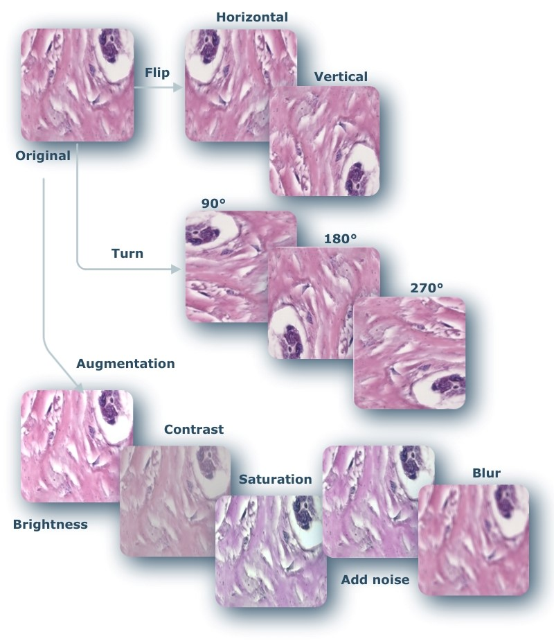

Fázy projektu
V: Výber aplikačného problému
Analýza odborných článkov a výber konkrétneho problému klasifikácie
VII : Trénovanie neurónových sietí
Použitie transfer-learning na náš problém a trénovanie NN na Google Colab
VII : Experimenty a vylepšenia
Zvýšenie úspešnosti klasifikátorov pomocou techník vylepšenia snímok
Motivácia
 
Ciele
Našou snahou je predpovedať typ rakoviny zo snímok už v skorom štádiu
rakoviny pomocou
umelých neurónových sietí, aby sa
pacienti mohli vyhnúť invazívnym diagnostickým
prístupom.
Princípy neurónových sietí
- Klasifikačná neurónová sieť
- Regresná neurónová sieť

Implementovaná regresná sieť
viacvrstvové neurónové siete
-> vstupná vrstva + skryté
vrstvy + výstupná vrstva

Aktivačná funkcia
- výstup - identita
- ostatné - Sigmoidná funkcia (výstup 0 - 1)
LOSS funkcia
- MSE (Mean Squared Error)

Implementovaná klasifikačná sieť
klasifikačná sieť
- výstup 1 / 0
- posledná vrstva - pridaná sigmoidná funkcia

Derivácia sigmoidy:

LOSS funkcia
- Binary Cross Entropy
Derivácia Binary Cross Entropy:

Graf regresnej neurónovej siete
Graf 1 -> trénovanie, 150 epôch
Graf 2 -> vysoký learning rate -> pretrénovanie siete


Implementácia učenia
Učenie NN prebieha pomocou
Vizualizácia procesu učenia NN
Animácia zobrazuje proces trénovania 3 vrstvovej neurónovej siete.

Dáta
Dataset 7900 histopatologicých snímkov pacientiek s rakovinou prsníka
4 zväčšenia -> 40x / 100x / 200x / 400x
rozdelenie dát -> Benígne / Malígne -> každá skupina obsahuje 4 podtypy
Dataset obsahoval snímky od - 81 pacientov
- rozdelenie do 27 foldov
- každý fold -> 2xM a 1xB
Metodológia
Konvolučné neurónové siete

Najväčšie využitie -> spracovanie obrazových dát
Základná jednotka -> matematická operácia konvolúcie
- umožňuje zachytávať určité črty, ktoré abstrahujú kľúčové
informácie pre finálnu predikciu
Namiesto neurónov - aktualizujú sa váhy filtračného
jadra (kernelu)
ResNet-152

Model zahŕňa 152 vrstiev.
Dopredná konvolučná neurónová sieť, ktorá obsahuje reziduálny typ spojenia
- funkcia preskočenia určitých vrstiev
– zabraňuje sa stagnácii a urýchľuje proces učenia
Trénovanie hlbokých neurónových sietí bez výskytu overfittingu.
Transfer learning
Použitie natrénovaného modelu -> transormovaný na naše použitie (pridaním vlastných vrstiev).
Má potenciál výrazne zlepšiť efektívnosť na trénovaní nových modelov.
Často slúži na extrakciu určitých vlastností, ktoré sú vstupom do vlastných nadefinovaných vrstiev.
Krížová validácia

Spôsobom rozdelenia určitej časti údajov na trénovanie a validáciu klasifikačného modelu. Najčastejším dôvodom pre použitie krížovej validácie je ohodnotenie priemernej úspešnosti klasifikátora a výpočet validačných metrík.
Ako veľmi bude model ovplyvňovať nezávislé vzorky dát?
Dáta sú v každej iterácii rozdelené rovankým počtom do všetkých foldov.
Parameter k predstavuje počet skupín.
Jedna iterácia:
- trénovanie -> (k - 1) skupín
– testovanie -> 1 skupina
Základný model

Prvá klasifikácia - klasifikácia snímok do 2 tried - benígne a malígne snímky
Po vykonaní experimentov sa ukázalo, že snímky s 200x zväčšením dávajú najlepšie
výsledky spomedzi ostatných zväčšení
Na vzorkách s najlepším zväčšením pri binárnej klasifikácii sa vykonávali klasifikácie
podtypov malígnych i benígnych vzoriek.
Techniky vylepšenia snímok
Posuvné okno
Metóda zväčšujúca počet dát tak, že zoberie zo snímky určitú časť a posuvným efektom sa z nej snaží vytvárať ďalšie snímky.
Pomocou posuvného okna sa z jednej snímky vytvárajú ďalšie snímky.
1 pôvodný obrázok -> k menších
Veľkosť nových snímok je vopred fixne nastavená pre všetkých k snímok.
Normalizácia

Metóda prispôsobuje vlastnosti základnej vzorky na celý súbor snímok. Proces, ktorý mení rozsah hodnôt intenzity pixelov.
Snaží sa odstrániť príliš veľké odlišnosti v celom datasete.
Použité metódy:
- Vahadane
– Macenko
– Reinhard
Vzorec na výpočet normalizovanej hodnoty pixelov:


Augmentácia
Metóda, ktorá znásobuje počet vzoriek v celom súbore dát.
Je možné ju použiť s viacerými technikami vylepšenia snímkov.
Možné varianty:
- použitie kontrastu,
– zmena jasu,
– pridanie šumu,
– horizontálne/vertikálne otočenie, ...
Výsledky

Klasifikácia snímok do 2 tried - BENÍGNE a MALÍGNE
Pre každé zväčšenie pre dôkaz úspešnosti - 27 - násobná validácia
tzn. rozdelenie dát do 26 trénovacích a 1 testovaciu skupinu
Použitá metóda early stopping -> zabránenie pretrénovaniu modelu
Najlepšie výsledky - 200x zväčšenie
Trénovanie -> 170 hodín


Na vzorkách s najlepším zväčšením pri
binárnej
klasifikácii sa
vykonávali klasifikácie podtypov malígnych i benígnych vzoriek
Najlepšie výsledky - pomocou techniky
posuvného
okna
Vykonávali sa experimenty s použitím techník
vylepšenia snímok
Trénovanie 30 sietí pre určovanie podtypov
->
250 hodín
Sumarizácia
- - Štúdium a implementácia vlastných modelov neurónových sietí.
- - Vizualizácia funkčnosti neurónovej siete.
- - Navrhnutý dvojfázový multitriedny klasifikátor typov rakoviny.
- - Použitý transfer learning na ResNet-152.
- - Trénovanie modelov pre prvú fázu (klasifikácia B/M) trvalo 170 hodín.
- - Trénovanie modelov pre fázu klasifikovania podtypov trvalo 250 hodín.
- - Bolo použitých 7992 histopatologických snímok pacientok s rakovinou prsníka.
- - Experimenty boli vykonávané pomocou 10 techník vylepšenia snímok.
Budúca práca
- Vykonanie experimentov zahŕňajúcich techniky vylepšenia snímok aplikovaných navzájom
- Experimentovanie s vlastnou architektúrou NN nad modelom ResNet-152
- Optimalizácia hyperparametrov v navrhunutých klasifikátoroch
- Pridanie nových dát bez postihnutia typu rakoviny, pre zvýšenie robustnosti modelov a ich finálnej aplikácie v medicínskom prostredí
- Vývoj komplexnej aplikácie pre medicínske prostredie pozostávajúce
z dvojfázovej klasifikácie typu rakoviny

Tím
Bc. Natália Žibeková
FRI-Inteligentné informačné systémyProgramujem hlavne v Jave a zaujímam sa o data mininig a strojové učenie, najmä pri využití v medicíne. Java, PHP, UML

Bc. Veronika Nováková
FRI-Biomedicínska informatikaZaujímam sa o dolovanie informácii z dát, ich prezentovanie, vizualizáciu a predikciu. Python, Java.

Bc. Ľubomír Ondreička
FRI-Informačné systémy - spracovanie dátZaujímam sa o spracovanie dát, umelú inteligenciu a rozoznávaniu objektov. Java, Python, HTML, CSS, JS, Anvil

Bc. Pavol Grofčík
FRI-Biomedicínska informatikaPrioritne sa zaujímam o spracovanie dát a databázy i neurónové siete s ich aplikáciou a využitím predovšetkým v medicíne. Python, Java, C
Bc. Peter Paciga
FRI-Informačné systémy - spracovanie dátBaví ma programovanie Backend-Frontend a orientujem sa na vizualizáciu dát a odhaľovanie nových znalostí. Java, PHP